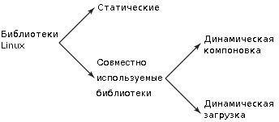
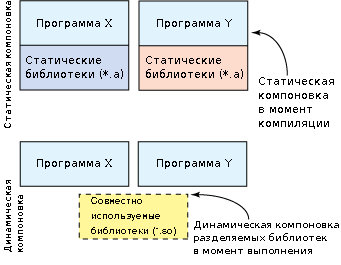

Динамически компонуемые совместно используемые библиотеки чрезвычайно важны в GNU/Linux. При помощи них приложения получают доступ к внешним функциям. Библиотеки подключаются на стадии выполнения, а общее потребление памяти сокращается, так как используется только необходимая на данный момент функциональность.
В данной статье рассказывается, как создавать и использовать динамические библиотеки, описываются различные утилиты для работы с ними, а также объясняются внутренние принципы работы динамических библиотек.
Статья когда-то размещалась на http://www.ibm.com/developerworks/ru/library/l-dynamic-libraries/index.html?S_TACT=105AGX99&S_CMP=GR01, теперь доступна только в веб-архиве.
* * *
Библиотеки были придуманы для объединения схожей функциональности в отдельные модули, которые могли использоваться совместно несколькими разработчиками. Такой подход соответствует модульному программированию, при котором программы строятся на основе модулей. В Linux доступно два вида библиотек, и каждый из них имеет свои преимущества и недостатки. При использовании статических библиотек их функциональность внедряется в программный код на этапе компиляции. Напротив, динамические библиотеки загружаются после запуска приложения, а связывание происходит на этапе выполнения. На рисунке 1 иерархически показаны виды библиотек в Linux.
Рисунок 1. Иерархия библиотек в Linux

Существует два способа использования совместно используемых библиотек: динамическая компоновка в момент загрузки и динамическая загрузка с подключением программным путем. В статье будут описаны оба подхода.
В простых программах с минимальной функциональностью статические библиотеки могут быть предпочтительнее. В программах же, использующих несколько библиотек, применение совместно используемых библиотек позволяет снизить потребление оперативной и дисковой памяти во время работы приложения. Это достигается за счет того, что одна совместно используемая библиотека может использоваться одновременно несколькими приложениями, при этом она присутствует в памяти в единственном экземпляре. В случае со статическими библиотеками каждая программа загружает свою собственную копию библиотечных функций.
В GNU/Linux доступно два метода работы с совместно используемыми библиотеками (оба метода берут свое начало в Sun Solaris). Первый способ – это динамическая компоновка вашего приложения с совместно используемой библиотекой. При этом загрузку библиотеки при запуске программы возьмет на себя Linux (если, конечно, она не была загружена в память раньше). Второй способ подразумевает явный вызов функций библиотеки в процессе т. н. динамической загрузки. В этом случае программа явно загружает нужную библиотеку, а затем вызывает определенную библиотечную функцию. На этом методе обычно основан механизм загрузки подключаемых программных модулей – плагинов. Оба рассматриваемых способа показаны на рисунке 2.
Рисунок 2. Сравнение статической и динамической компоновки

Динамическая компоновка в Linux
Рассмотрим подробнее процесс использования динамически компонуемых совместно используемых библиотек Linux. Приложение, которое запускает пользователь, представляет собой ELF-образ (Executable and Linking Format, формат исполняемых и компонуемых файлов). После запуска ядро вначале загружает образ программы в виртуальное адресное пространство создаваемого процесса; при этом анализируется ELF-секция под названием .interp, которая указывает, какой динамический загрузчик будет использоваться (как правило, это /lib/ld-linux.so). Содержимое этой секции представлено в листинге 1. Все это очень похоже на то, как в shell-скриптах первой строкой (shell-bang-строка) #!/bin/sh задается интерпретатор, который будет исполнять скрипт.
Листинг 1. Использование утилиты readelf для вывода заголовков исполняемого файла
mtj@camus:~/dl$ readelf -l fileWithDl
Elf file type is EXEC (Executable file)
Entry point 0x8048618
There are 7 program headers, starting at offset 52
Тип Elf файла – EXEC (исполняемый файл)
Точка входа 0x8048618
Имеется 7 заголовков, начиная со смещения 52
Program Headers (Заголовки программы):
Type Offset VirtAddr PhysAddr FileSiz MemSiz Flg Align
(Тип) (Смещ.) (Вирт.адр.)(Физ.адр.) (Разм.файла)(Разм.пам.)(Флаги)(Выравн.)
PHDR 0x000034 0x08048034 0x08048034 0x000e0 0x000e0 R E 0x4
INTERP 0x000114 0x08048114 0x08048114 0x00013 0x00013 R 0x1
[Requesting program interpreter: /lib/ld-linux.so.2]
[Запрашиваемый интерпретатор программы: /lib/ld-linux.so.2]
LOAD 0x000000 0x08048000 0x08048000 0x00958 0x00958 R E 0x1000
LOAD 0x000958 0x08049958 0x08049958 0x00120 0x00128 RW 0x1000
DYNAMIC 0x00096c 0x0804996c 0x0804996c 0x000d0 0x000d0 RW 0x4
NOTE 0x000128 0x08048128 0x08048128 0x00020 0x00020 R 0x4
GNU_STACK 0x000000 0x00000000 0x00000000 0x00000 0x00000 RW 0x4
...
mtj@camus:~dl$
Кстати, ld-linux.so тоже является совместно используемой ELF-библиотекой, хотя собрана она статически и не имеет других зависимостей. В случае использования динамической компоновки ядро передает управление на динамический компоновщик (другое название – ELF-интерпретатор), который после собственной инициализации загружает указанные совместно используемые библиотеки (если они уже не в памяти). Далее динамический компоновщик производит необходимые перемещения (relocations), включая совместно используемые объекты, на которые ссылаются требуемые совместно используемые библиотеки. Путь, по которому система будет искать совместно используемые объекты, задается переменной среды LD_LIBRARY_PATH. Закончив с библиотеками, компоновщик отдает управление исходной программе, которая начинает выполнение.
В основе процесса перемещения (relocation) лежит косвенная адресация, которую обеспечивают две таблицы – глобальная таблица смещений (Global Offset Table, GOT) и таблица связывания процедур (Procedure Linkage Table, PLT). В этих таблицах содержатся адреса внешних функций и данных, которые ld-linux.so должен загрузить в процессе перемещения. Получается, что код, содержащий обращение к внешним функциям и, таким образом, ссылающийся на данные этих таблиц, остается неизменным – модифицировать требуется только таблицы. Перемещение может проходить либо сразу во время загрузки программы, либо когда понадобится нужная функция. (Эта альтернатива будет рассмотрена подробно в разделе динамическая загрузка в Linux.
По завершении перемещения динамический компоновщик исполняет стартовый код каждой совместно используемой библиотеки (если этот код имеется), содержащий инициализацию и подготовку внутренних данных. Стартовый код определяется в секции .init ELF-файла. Во время выгрузки библиотеки может выполняться также и завершающий код, определяемый в секции .fini. Вызвав функции инициализации, динамический компоновщик отдает управление исходному исполняемому образу.